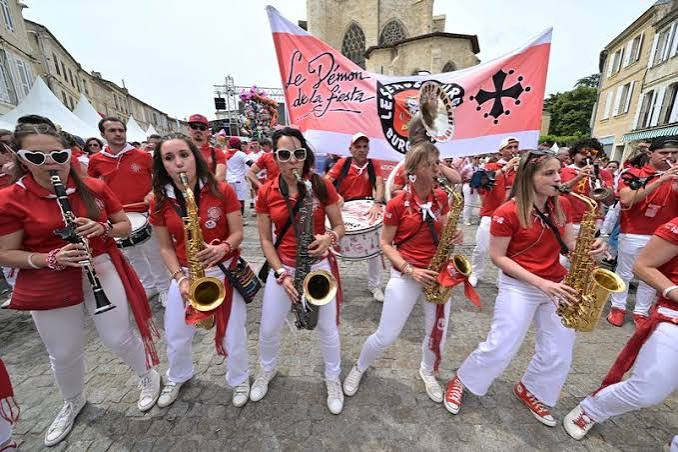

Fêtes de la
Pentecôte à
Condom


⟹ Traditions & Convivialité ⟸
Chaque année, autour du week-end de Pentecôte, Condom, cité épiscopale nichée au cœur de la Ténarèze, revêt ses habits de fête. Dans les rues du centre historique et sur les quais de la Baïse, la ville donne le coup d'envoi de la saison des férias du Sud-Ouest, dans un mélange de ferveur religieuse et de liesse populaire hérité de longue tradition.
Une précision importante : le grand rendez-vous musical de Condom n'est plus lié au calendrier de la Pentecôte. Le Festival Européen de Bandas y Peñas se tient aujourd'hui le deuxième week-end de mai. Imaginé dès 1964 puis créé en 1973 par des passionnés condomois, il est né comme un concours destiné à mettre les musiciens amateurs au premier plan.
La banda est une formation de rue associant principalement cuivres, bois et percussions. Trompettes, trombones, tubas ou sousaphones côtoient saxophones, clarinettes, caisses claires, grosses caisses et cymbales. Sa particularité est de jouer en mouvement, au plus près du public, dans les rues, les cafés, les bodégas et sur les places.
Le concours reste au cœur de l'identité du festival. Les formations sont jugées autant pour leur qualité musicale que pour leur capacité d'animation et leur endurance. La Palme d'Or distingue la meilleure banda : le week-end prend ainsi la forme d'un véritable marathon musical.

Condom, place forte historique de la Gascogne, cultive un art de vivre où l'hospitalité et la fête tiennent une place centrale. Chaque année, ce rendez-vous est devenu l'un des points de départ de la saison des férias, rassemblant habitants et visiteurs venus de toute la région.
Aux couleurs rouge et blanc, traditionnellement portées lors des grandes fêtes du Sud-Ouest, la ville vibre au son des bandas qui animent les rues, les bodégas et jusqu'à la cathédrale Saint-Pierre, où la messe de Pentecôte prolonge cette même joie de vivre.
Au fil des éditions, la manifestation a su préserver son équilibre entre recueillement et fête populaire : ici, la tradition religieuse et l'ambiance festive coexistent sans concession à l'une ou à l'autre.
La cathédrale Saint-Pierre : joyau gothique du centre historique, elle est au cœur des célébrations de Pentecôte et donne son nom à la place où convergent les festivités.
Les quais de la Baïse : la rivière qui traverse Condom offre un cadre bucolique pour prolonger la fête loin de l'agitation des rues commerçantes.
Ouverture de la saison des férias : ce rendez-vous marque traditionnellement le lancement de la saison des grandes fêtes populaires du Sud-Ouest, entre bandas, bodégas et gastronomie gasconne.
Une ville transformée : pendant le festival, Condom, qui compte environ 6 500 habitants, accueille plusieurs dizaines de milliers de festayres. L'édition 2026 a réuni près de 50 000 personnes sur trois jours, donnant une idée de l'ampleur prise par l'événement.
Le « passe-rue » : plus qu'un concert classique, la banda se découvre en déambulation. Les musiciens se déplacent d'une rue à l'autre et jouent au milieu du public : cette proximité constitue l'une des signatures culturelles du festival.
Centre historique de Condom, cité épiscopale de la Ténarèze, à quelques minutes à pied de la cathédrale Saint-Pierre et des quais de la Baïse.
Accès : Condom se trouve à environ 45 minutes d'Auch et de Agen ; stationnement organisé aux abords du site pendant la fête.
Bon à savoir : entrée libre dans les rues et sur les places, prévoir tenue rouge et blanche pour se fondre dans l'ambiance festive.